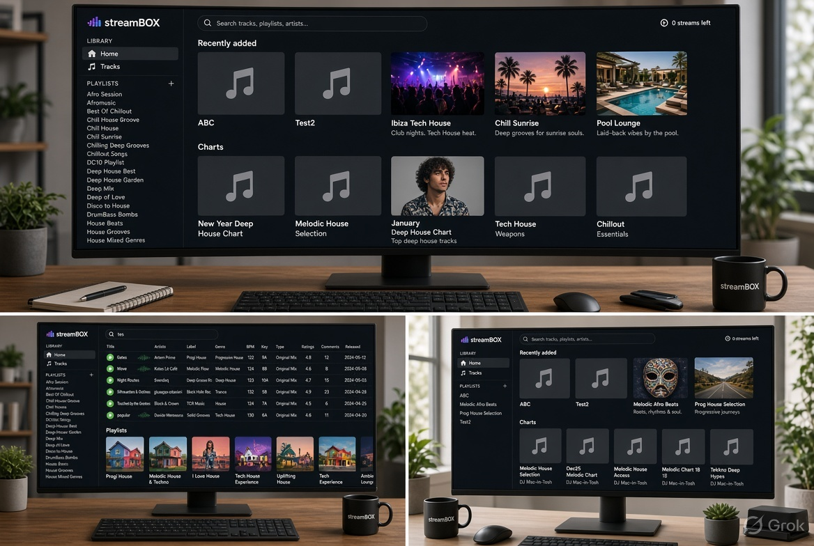
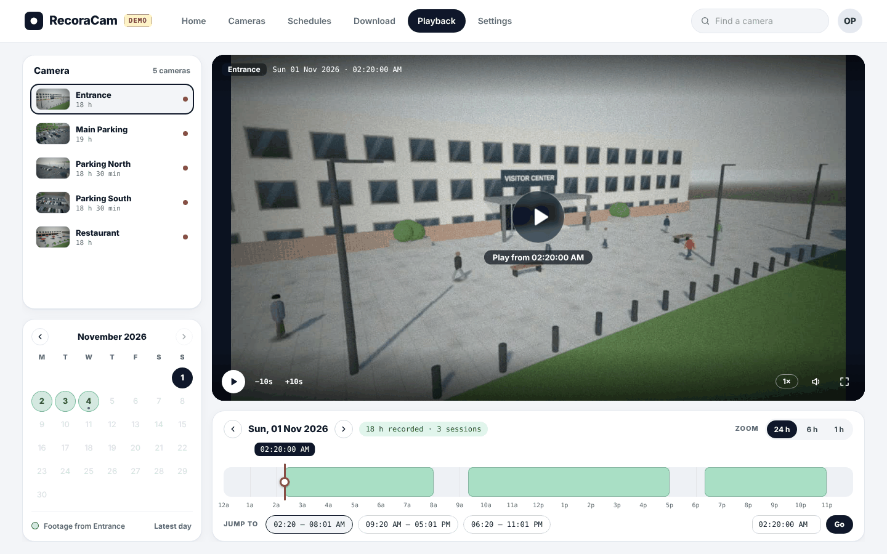
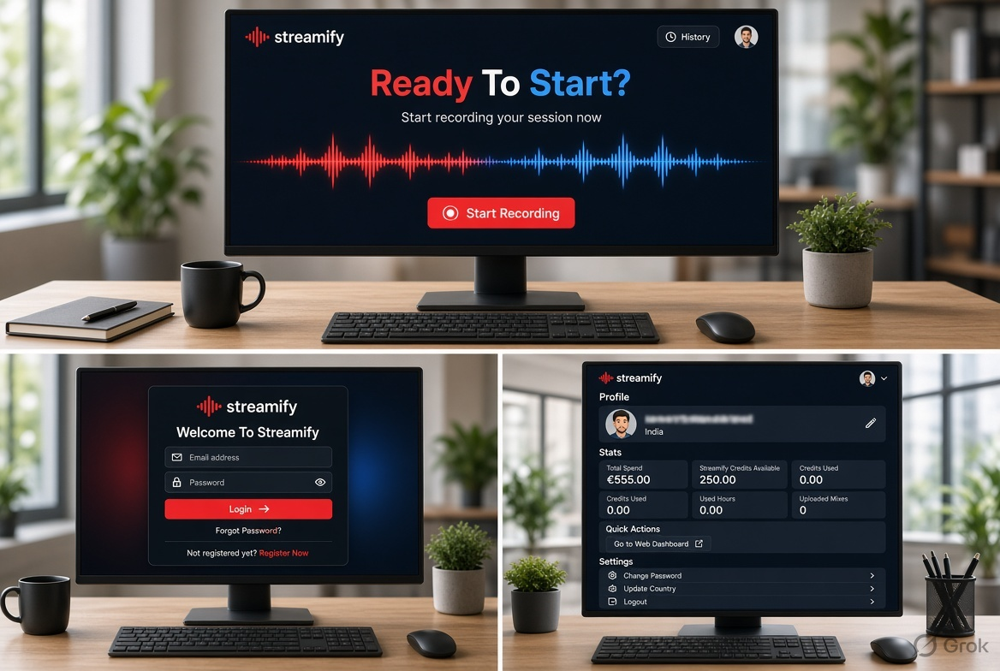
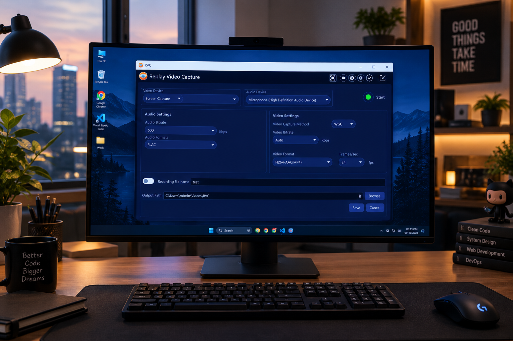
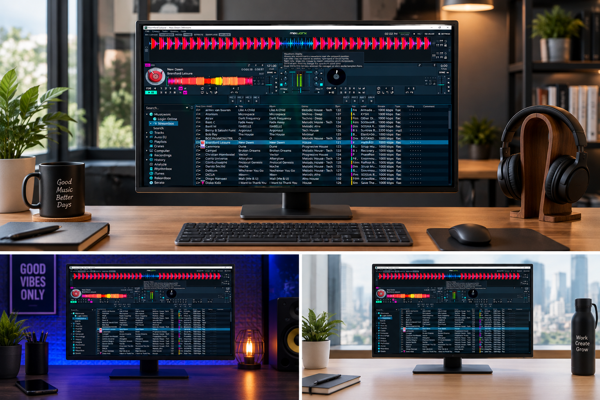
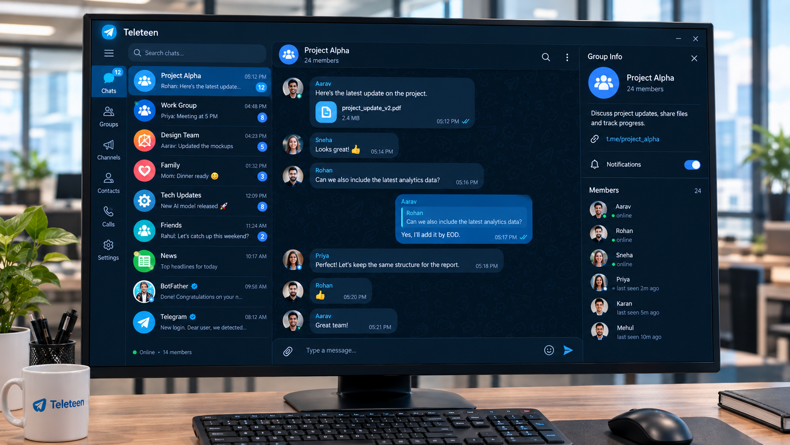

Streambox — music streaming client
Moved the app from Qt 5 to Qt 6 and redesigned the UI. Made library sync about 31× faster.
View ↗Software developer with 14+ years of C++/Qt, Python and computer-vision work. I ship desktop apps, video pipelines and embedded systems for clients worldwide. I also build my own products.
I wanted a camera recorder that schedules recording, plays footage back and exports clips, without a cloud account or subscription. I couldn't find one, so I built it.
A self-hosted video recorder for IP cameras. It runs in your browser and keeps footage on your own disk.

Desktop software for audio, video and real-time data, built in C++ with Qt and JUCE.

Moved the app from Qt 5 to Qt 6 and redesigned the UI. Made library sync about 31× faster.
View ↗
Records live sets and uploads them to the cloud, retrying failed uploads. Works with DJ controllers.
View ↗
Records screen video and audio on Windows and macOS. I built the capture engine and the UI.
View ↗

A Windows app that lets parents monitor and manage how their children use the device.
View ↗A cross-platform client that connects to exchange sockets and stores data in a local database.
Desktop, audio/video and computer-vision projects for clients around the world. I also build RecoraCam.
Built camera recorder software, a WebRTC classroom, Raspberry Pi recorders and an intercom system.
Built computer-vision apps on BeagleBoard and cross-compiled Linux kernels.
B.Sc. Electronics · Kannur University
Desktop apps, video pipelines, embedded vision. I'm happy to talk it through.